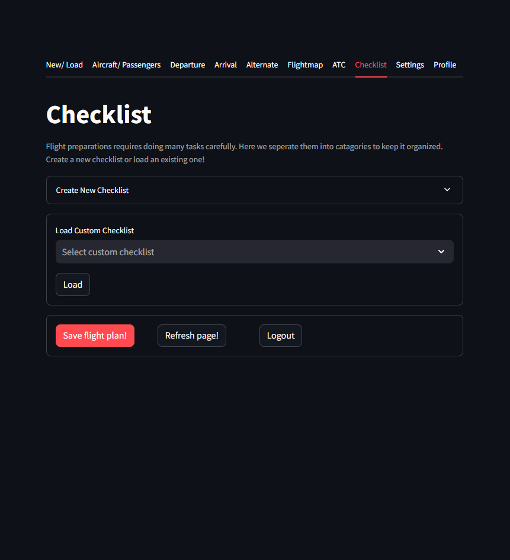
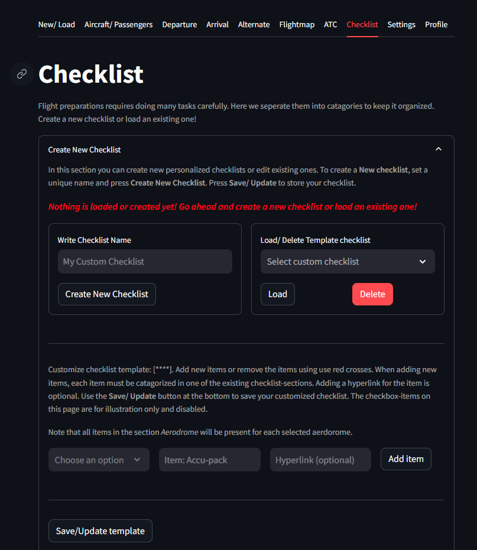
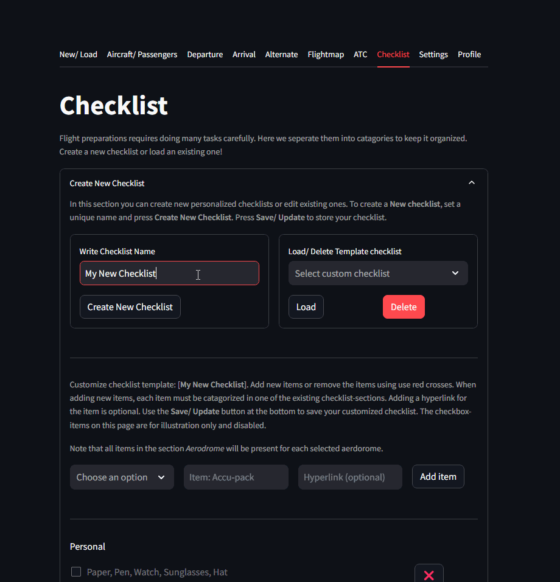
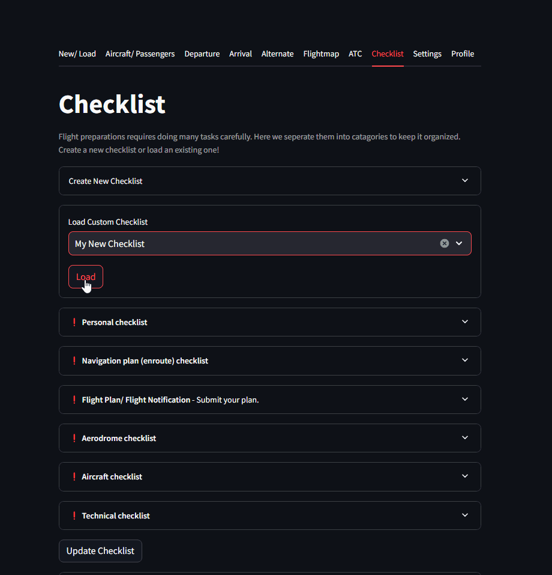

Smart Checklists
In aviation there are numerious preparation steps to ensure safe and efficient flights. Central to this process are checklists, structured lists of tasks and procedures that pilots follow before, during, and after each flight. These checklists serve as critical tools to enhance safety, mitigate risks, and maintain operational standards in the dynamic environment of aviation. The systematic use of checklists helps pilots manage complexities, minimize human error, and uphold the highest standards of safety and operational efficiency. Whether for routine flights or challenging conditions, checklists are indispensable tools that instill confidence and reliability in every phase of flight operations.
We can seperate the checklist into three main catagories:
Pre-flight checklists encompass a range of tasks, from assessing weather conditions and verifying aircraft readiness to reviewing flight plans and ensuring compliance with regulatory requirements.
During flight, checklists guide pilots through essential procedures such as takeoff, navigation, and landing protocols, ensuring precision and adherence to operational norms.
Post-flight checklists are equally vital, facilitating thorough inspections, documentation of flight data, and aircraft maintenance checks.
In SkyWalk we focus on the Pre-flight checklist and the Post-flight checklist.
For the pre-flight checklist can roughly be catagorized into the groups:
Bring-along tasks: These are mandatory or practical items that you need to put in your bag or bring along. Some examples: pilot licence, sunglasses, etc.
Look-up tasks: These tasks can be mandatory or just smart to do before flight. Think of aerodrome information, METAR, NOTAMs, ATC frequencies etc.
Computational tasks: Computational tasks are for example to determine the crosswind, landing/takeoff distances etc.
Before-flight tasks: These are tasks that you need to do before flight. Think of flight plan, briefing your passengers.
Note
SkyWalk helps you with the checklists as it will summarize the information across all tabs and bring it back in the checklist.
 |
Create New Checklist
Checklists can differ per person, between aircrafts and destinations. In SkyWalk you can make your own customized checklist. It will initially load some default items for which you then can add/ remove items in the various catagories:
Personal
Navigation
Flightplan
Aerodrome
Technical
Aircraft
Final
New items can be added or remove use the red crosses. When adding new items, each item must be catagorized in one of the listed catagories. Adding a hyperlink for the item is optional. This can be used to quickly lookup some information on a website. Use the Save/ Update button at the bottom to save your customized checklist.
 |
 |
Load Checklist
Loading checklists is straightforward. Simply select a saved checklist and press the load button. After loading the checklist, all checklist-items are listed for use. Information from other tabs is listed with the checklist to show the most recent information. In the exmaple below, it can seen that lots of information from various tabs is projected into the checklist. Some notifications describe also show that more information is required.
 |